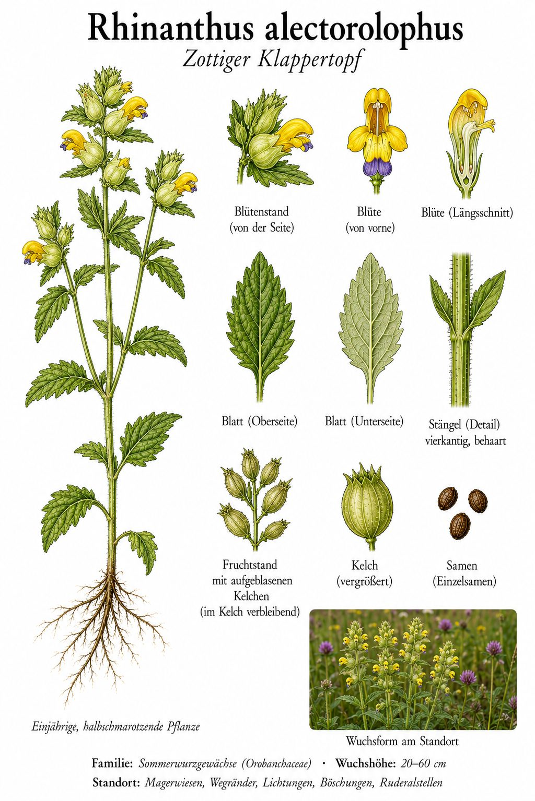
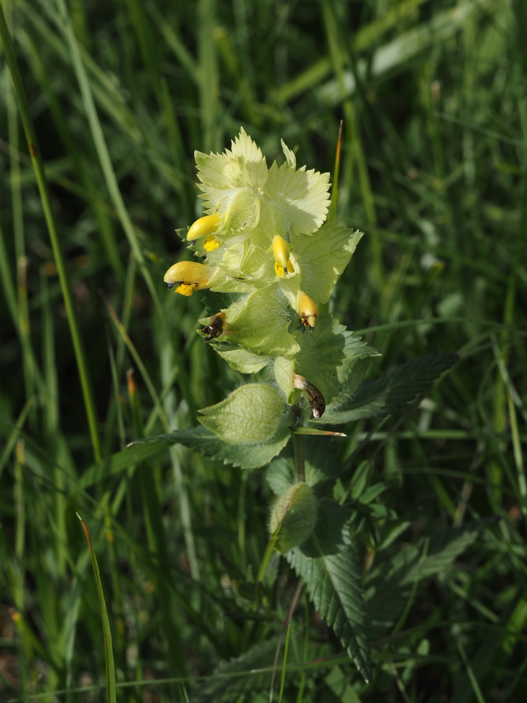
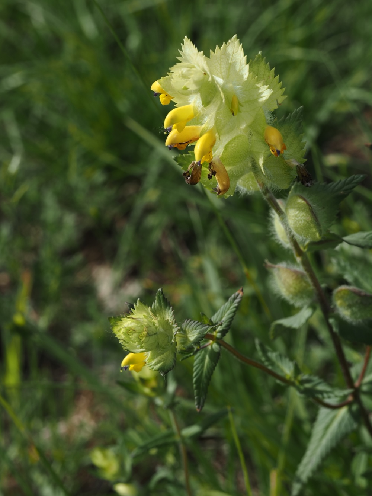

Gelbe Lippenblüten in aufgeblasenen Kelchen – die im reifen Zustand klappern.



Klappern in der Wiese
Ab Mai ragen die gelben Lippenblüten des Klappertopfs aus auffällig aufgeblasenen, zottig behaarten Kelchen – auf Magerwiesen, an Wegrändern und Böschungen. Sind die Samen reif, lösen sie sich in den trockenen Kelchen und klappern bei Wind oder Berührung deutlich hörbar. Genau das hat der Pflanze ihren Namen gegeben.
Halbschmarotzer mit Nutzen
Der Klappertopf hat grüne Blätter und betreibt Photosynthese – zugleich zapft er aber mit Saugwurzeln die Wurzeln benachbarter Gräser an und entzieht ihnen Wasser und Nährstoffe. Er ist also ein Halbschmarotzer. Weil er wuchsstarke Gräser schwächt, schafft er Platz für andere Wiesenblumen; im Naturschutz wird er gezielt eingesetzt, um artenreiche Wiesen zu fördern.
Wissenswertes & Merksätze
Der Name klappert
Reife Samen lösen sich im aufgeblasenen Kelch und klappern bei Wind – ein hörbares Bestimmungsmerkmal.
Helfer der Artenvielfalt
Als Halbschmarotzer bremst der Klappertopf das Gras und macht Wiesen blütenreicher – eine natürliche „Gras-Bremse“.